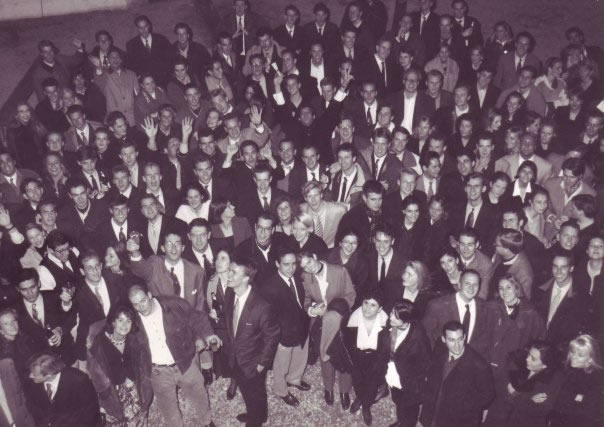

Klub 85
The Klub 85 is a student and alumni network for students of the University of Fribourg. This special association was founded in 1985 by a group of domestic and foreign students living and studying in Fribourg.
The idea of the founders of the Klub was to bring together a group of tolerant, ambitious and dynamic students, which political or religious views and visions should not be limited to a certain direction. The goal was to help each other in their studies, to party and have fun together and thus to create life lasting friendships - this still holds today.
The creation of the Klub made sure that everyone sees each other at least once a year for an event in order to make sure these friendships do not end up in fading long distance acquaintances. The nationality or origin do not matter for the admission. What counts is personality, character and commitment of the young student. It is on this basis that the friendships are created which are essential to the Klub 85. This international network works and the community holds for a life time.

Events
The Klub 85 also holds public events, these essentially consist of lectures from senior members of the economy, the arts and politics as well as company visits which serve as orientation for the time after the studies. This opens opportunities to get to know interesting individuals from other study tracks or professional branches.
The second main goal of the Klub is to host exciting parties for the students of Fribourg to spice up the else rather dull and monotonic party life. Events like the traditional motto parties, the legendary forestparty and the glamorous Christmasball are key events in everybody's party agenda.
Active Members
The Klub currently consists of nine active members coming from four different countries, all studying at the University of Fribourg.